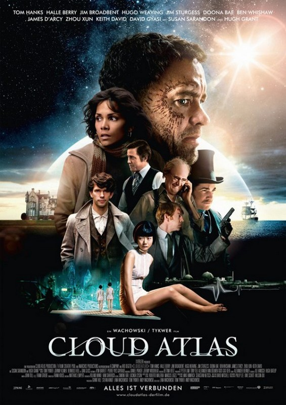
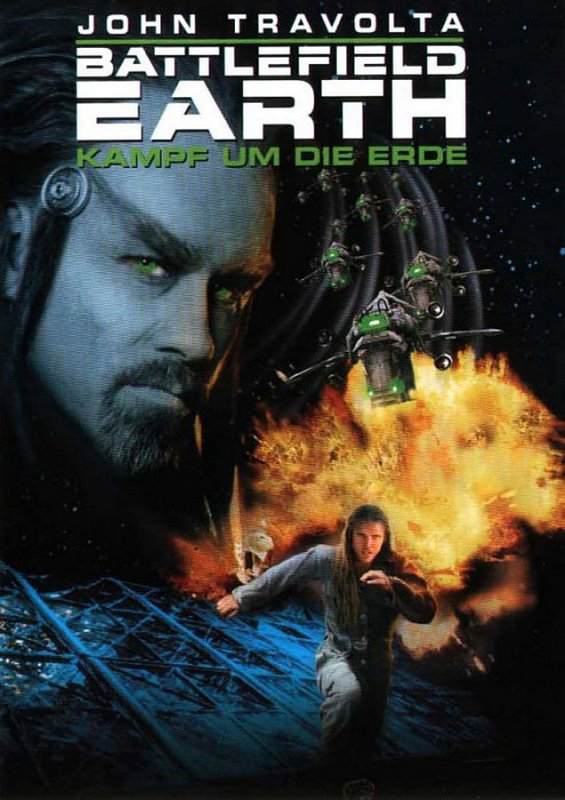

von Oliver Koch
(ok) – Wie anfällig ist das Science-Fiction-Genre für Kino-Flops? Oftmals teuer produziert und mit ebenso teurem wie gigantischen Marketing-Aufwand gepusht, bieten sie sich an, an den Kassen abzuschmieren und den produzierenden Filmstudios richtig weh zu tun. Hier lauern die größten Filmflops, wie gerade in letzten Jahren ersichtlich …
Oder?
Donnernde Flops, die unvorstellbare rote Zahlen schreiben, gibt es zuhauf. Einige rissen sogar ganze Filmstudios ins Verderben - die beiden spektakulärsten kommen dabei gar nicht aus dem SF-Genre.
So verkaufte die amerikanische Eisenbahngesellschaft Transamerica Corporation das Studio United Artists Anfang der 80er-Jahre, weil der damals angesagte Regisseur Michael Cimino für seine umstrittene 4-Stunden-Western-Extravaganz Heaven’s Gate das Budget um das Zehnfache (!) auf 44 Millionen Dollar überzog und nur 4 Millionen einnehmen konnte. Die Karriere des für Die durch die Hölle gehen Oscar-gekrönten Regisseurs ruinierte der Film gleich mit.
Mitte der 90er-Jahre traf es das damals höchst erfolgreiche Studio Carolco. Dieses hatte mit Total Recall, Terminator 2, Cliffhanger, Stargate und Basic Instinct mehrere Blockbuster verantwortet - doch den 100-Millionen-Verlust des Piraten-Abenteuers Die Piratenbraut überlebte es nicht. Anders als United Artists, die aufgekauft wurden und so weiter existierten, verschwand Carolco vollständig. Der Film vernichtete zudem die Karrieren von Regisseur Renny Harlin und Hauptdarstellerin sowie Oscar-Preisträgerin Geena Davis.
John Carter – Zwischen zwei Welten (© Walt Disney)
Heute sind Studios nicht mehr zwangsläufig so schnell kleinzukriegen - wehtun den Studios Flops dennoch.
So musste Disney 2012 mit dem SF-Film John Carter ein Mega-Desaster einstecken. Enorme 250 Millionen Dollar wurden in das Science-Fiction-Epos investiert, das letztlich nicht genug Zuschauer sehen wollten. Mit einem Einspiel von gerade einmal knapp über 280 Millionen Dollar weltweit spielte der Film zwar gerade so seine Kosten wieder ein - brutto, wohlgemerkt! - aber netto fuhr er ordentlich Verluste ein, die sich wenn überhaupt nur über Heimkino-Auswertungen und TV-Lizenzen amortisieren könnten.
Seither wird die Debatte, ob John Carter einfach ein mieser, ein dummer oder ein toller Film sei, emotional geführt. Dass das Spektakel in jedem Fall eine Extravaganz, ein deutliches Risiko und in jedem Fall viel zu teuer war, ist klar.
Unabwendbar ist auch seine Spitzenposition in der Liste der größten Filmflops aller Zeiten mit dem größten Verlust, den je ein Film eingefahren hat.
John Carter war nicht der einzige große SF-Flop des Jahres 2012: Im gleichen Jahr versenkte Universal Pictures mit Battleship eine Menge Geld. Peter Bergs mit über 200 Millionen Dollar Produktionskosten geradezu idiotisch teure Leinwand-Adaption des Brettspiels Schiffe versenken spielte zwar weltweit knapp über 300 Millionen Dollar ein, dies aber ebenfalls brutto. Abzüglich der Anteile für Kinos und der Marketingausgaben versenkte das Studio neben Schiffen auch mal nebenbei einen Film. So kann es gehen.
Verkraftbar, aber dennoch schmerzhaft war die 2012-Neuauflage des Schwarzenegger-Krachers Total Recall, in dem Colin Farrell die Hauptrolle übernahm. Underworld-Regisseur Len Wiseman versenkte 125 Millionen Dollar Budget in einen Film, der im Vergleich zum Original ungleich oberflächlicher und uninteressanter war. Das Publikum blieb fern genug, um ihn mit gerade einmal 58 Millionen Dollar Einspiel in den USA zu einem Desaster werden zu lassen. Auch international kam der Film nicht in die Pötte: Bei knapp über 198 Millionen Dollar war Schluss - zu wenig, um den Film nach Abzug von Steuern, Kino-Abgaben und Marketingausgaben in die Gewinnzone zu fahren. Natürlich überstand da produzierende Studio Sony/Columbia den Reinfall - weh tut so etwas dennoch.
Doch es sind nicht nur die großen US-Filme, die scheitern - es traf auch einen deutschen Film: Cloud Atlas, der zumindest mit seinen SF-Zeitebenen die Fans anziehen konnte, war mit Produktionskosten von etwa 130 Millionen Dollar (100 Millionen Euro) nicht nur der teuerste deutsche und der teuerste europäische Film aller Zeiten, sondern mit einem weltweiten Einspiel von desaströsen 130 Millionen Dollar auch der größte Kinoflop Deutschlands und Europas. Immerhin wurde der Film von einem ganzen Konglomerat an Produzenten ermöglicht, so die ARD, die zwar Millionen investierte, den international prominent besetzten Film dann aber im Spätprogramm unter der Woche versendete.
Noch schlimmer traf es jüngst die Wachowski-Geschwister. Ihr erst um ein halbes Jahr verschobenes und umso heißer erwartetes SF-Epos Jupiter Ascending war nicht nur eine gigantische Filmgurke, sondern auch eine finanzielle Katastrophe kosmischen Ausmaßes. Warner Bros. hatte 175 Millionen Dollar investiert in der Hoffnung, an den Glanz des Wachowski-Meilenteins Matrix anknüpfen zu können - vergebens. 3 Monate nach weltweitem Start brachte der Film nicht einmal 180 Millionen Dollar an den Kinokassen der Welt ein.
Für Warner sicher kein Grund, pleite zu gehen - aber ein Verlust in dreistelliger Millionenhöhe bleibt auch bei Hollywood-Giganten nicht unvergessen. Dass Jupiter Ascending die Sterne der einst so gefeierten Wachowski-Geschwister endgültig ausblasen wird, dürfte ausgemachte Sache sein: Sie waren nämlich auch an dem schon genannten Cloud Atlas ebenso beteiligt wie an dem gefloppten Mega-Schwachsinn Speed Racer.

Cloud Atlas (© Warner Bros.)
Disney hatte sich gerade von dem John-Carter-Flop erholt, da kam ein erneuter Mega-Flop - dieser Flop brachte das Studio dazu, die abzuschreibenden Verluste durch das Werk öffentlich mit 190 Millionen Dollar zu beziffern.
Der Flop, der all dies verursachte, kam aus einer unerwarteten Ecke, sah es doch nach einem todsicheren Erfolg aus. Dieser Flop war jedoch kein Science-Fiction-Film, sondern war wie der Mega-Flop Heaven’s Gate ein Western: Ausgerechnet Lone Ranger mit Johnny Depp als Star sowie dem Regisseur und den Produzenten der Fluch-der-Karibik-Reihe, brachte den Riesen Disney ins Schwitzen und Johnny Depps anscheinend unendliche kometenhafte Karriere ins Straucheln. Den Kosten von 215 Millionen Dollar stand ein weltweites Einspiel von 260 Millionen gegenüber. Mit solch einer Katastrophe hatte niemand gerechnet.
Die Pleite von John Carter wurde noch tapfer weggeatmet, nun war das Maß voll: Disney wollte keine Filme mehr herausbringen, deren Budget über 200 Millionen Dollar lag. Eine bedeutungsvolle Ansage. Tatsächlich nahmen die Budgets in Folge spürbar ab. Erst mit The Avgengers: Age of Ultron wagte man sich wieder in die Gefilde von 250 Millionen. Hier aber war der Erfolg auch abzusehen, schließlich handelt es sich hierbei um die Fortsetzung des bislang noch dritterfolgreichsten Films der Kinogeschichte. Teil 1 hatte über 1,5 Milliarden Dollar in die Kinokassen gespült - da sind 250 Millionen Dollar für das Sequel ein sicheres Investment.
Donnernd ging auch ein weiteres SF-Film-Projekt 2011 unter: Das Animations-Abenteuer Milo & Mars, ebenfalls aus dem Hause Disney. Die Motion-Capture-Verfilmung eines Kinderbuchs kostete 150 Millionen Dollar, erlebte aber finanziell empfindlich Schiffbruch - nicht einmal 23 Millionen Dollar Einspiel in den USA und nicht einmal 40 Millionen Dollar weltweit machen das Werk aus der Schmiede von Robert Zemeckis zu einer gigantischen Geldverbrennungsmaschine mit mäßigen bis miesen Kritiken. Nicht umsonst rangiert Milo & Mars, der im Original den putzigen Titel Mars needs Moms trägt, in den Top-Listen der verlustreichsten Filme.
Vor diesem Hintergrund tun sich gerade in Bezug auf Disney Abgründe auf: 2011 Milo & Mars, 2012 John Carter, 2013 Lone Ranger: In drei Jahren brachten drei Filme dem Konzern mehr als albtraumhafte 500 Millionen Dollar Nettoverluste. Ob und dass dieses Geld an anderer Stelle locker wieder reinkam, tut da nichts zur Sache. Das Beispiel zeigt: Filme bleiben trotz der immer wieder magischen Einspielergebnisse eine riskante Sache, Disneys Teilrückzug aus der +200-Millionen-Liga ist nicht nur vollkommen verständlich, sondern notwendig.
Es waren Steven Spielberg und George Lucas, die eindringlich vor einer Implosion des Hollywood-Betriebs warnten. Der Misserfolg gibt ihnen recht.
Von Flop zu Top: Auch das gibt es.
So entpuppte sich 1982 der SF-Überflieger Blade Runner zum finanziellen Rohrkrepierer. Er ging im Rausch von E.T. einfach unter und wurde - ja, man muss es einfach so sagen - ein Flop. Die Kosten von ca. 30 Millionen Dollar waren vor über 30 Jahren eine astronomische Summe, und der Film schaffte er gerade einmal, diese wieder einzuspielen. Aus heutiger Sicht ist Ridley Scotts legendäres Meisterwerk damals auch zu sehr seiner Zeit voraus gewesen. Zwar kam Blade Runner in Frankreich famos an, doch das reichte damals nicht, den Film zu etablieren. Es konnte auch an den Verfälschungen gelegen haben, die Scott für die Kinoveröffentlichung hinnehmen musste: Die gefürchtete Stimme aus dem Off, ein nachträglich angeheftetes, kitschiges Ende, das von Scott nie vorgesehen war.
Erst Anfang der 90er-Jahre wurde Blade Runner im Director’s Cut erneut veröffentlicht und eroberte endgültig den Olymp. Dass der Film beim Erscheinen weder ein Erfolg, noch ein Kritikerliebling wurde, mag man heute nicht mehr verstehen.
Hinnehmen muss man es aber. Dass dem Film nachträglich Ruhm, Ehre und Erfolg widerfuhr, ist eine Gerechtigkeit des Schicksals, und ja, auch so etwas gibt es.
Nicht unerwähnt bleiben darf an dieser Stelle natürlich das Eddie-Murphy-Vehikel Pluto Nash von 2002, der Warner Bros. multiple Schmach bereitete: Bei Kosten von über 100 Millionen Dollar spielte er weniger als ein Zehntel seiner Kosten ein. Hinzu kamen vernichtende Kritiken - und die Nominierung für die Goldene Himbeere als schlechtester Film überhaupt.
Eine ähnliche Bruchlandung erlebte auch Warners Battlefield Earth mit John Travolta in der Hauptrolle. Nicht nur, dass der Film an der Kinokasse abschmierte: Das Machwerk nach dem Roman des Scientology-Gründer L. Ron Hubbard wurde mit einer beispiellosen Welle an Hohn und Spott überzogen, die allen Beteiligten bis heute peinlich ist. Oscar-Preisträger und Nebendarsteller Forest Whitaker erschien gar nicht erst zur Premiere, John Travoltas ruhmreiche Jahre fanden schlagartig ein Ende - bis heute. Er traute sich erst wieder im Film-Musical Hairspray wieder in einen großen Hollywood-Film - als Frau.

Battlefield Earth (© Warner Bros.)
Auch Comic-Verfilmungen sind nicht automatisch Hits. Das musste Warner Bros. äußerst schmerzhaft erfahren, das mit der Dark-Knight-Trilogie von Christopher Nolan einen Goldesel im Stall hatte: Über 200 Millionen Dollar pumpten die Verantwortlichen völlig selbstverständlich in Martin Campbells Green Lantern und hofften, damit Ryan Reynolds endgültig zum Mega-Star zu machen.
Daraus wurde nicht nur nichts, der Schuss ging ordentlich nach hinten los. Schlechte Kritiken, miese Mundpropaganda und über 100 Millionen Dollar Verlust ließen die Verantwortlichen in die Tischplatten beißen, spielte der Film noch lediglich brutto seine Produktionskosten wieder ein. Zweiter Teil? Ausgeschlossen.
Trotz der Katastrophen besagen nackte Zahlen etwas ganz anderes: SF und Phantastik allgemein sind eine sichere Sache, auch die hochbudgetierten Mega-Produktionen.
Ein kleiner Rückblick:
1974 wird Steven Spielbergs Der weiße Hai der erfolgreichste Film aller Zeiten.
1977 bricht George Lucas’ Star Wars alle Rekorde.
1982 schafft es Steven Spielberg, mit E.T. zum zweiten Mal den erfolgreichsten Film aller Zeiten zu inszenieren.
1993 steckt Jurassic Park alle Einspielergebnisse in den Sack. Und Steven Spielberg.
1997 passiert mit Titanic das Unfassbare: Als erster Film mit über 200 Millionen Dollar Produktionskosten unken viele, dass der Mega-Film der Studios Fox und Paramount das größte Geldgrab der Filmgeschichte werden könnte - er wird als erster Film mit Einnahmen von über 600 Millionen Dollar allein in den USA und 1,8 Milliarden Dollar weltweit der erste Film, der überhaupt die 1-Milliarde-Marke knackt.
Alle weiteren Filme, die die Milliarde schaffen, bleiben mehrere hundert Millionen Dollar hinter den märchenhaften Einspielzahlen. Die 3D-Wiederveröffentlichung hievt Titanic schließlich über 2 Milliarden und James Cameron, der mit dem Film nach Terminator 2 und True Lies zum dritten Mal in Folge die jeweils teuersten Filme ihrer Zeit abgeliefert hat, zum Märchenprinzen des Box-Office.
12 Jahre lang bleibt Camerons Titanic unangefochten an der Spitze. Dann kommt ein SF-Film - nebenbei von James Cameron.
Avatar als erreicht als erster Film überhaupt die 2-Milliarden-Marke und führt bis heute mit sagenhaften 2,8 Milliarden Dollar unangefochten die Liste der erfolgreichsten Filme aller Zeiten an, gefolgt von Titanic.
Auf Platz 3: The Avengers mit über 1,5 Milliarden - die Investition von 220 Millionen Dollar hat sich bestens gelohnt.
2015 steht einiges in den Startlöchern. Mit dem bereits erwähnten Jupiter Ascending hat dieses Jahr seinen ersten Mega-Flop, mit dem gerade gestarteten Avengers: Age of Ultron den ersten Mega-Hit.
Im Mai startet Mad Max: Fury Road, dem ersten Film aus der Mad-Max-Reihe seit 30 Jahren.
Im Juni tritt Jurassic World an.
Im Juli gibt es ein Wiedersehen mit Arnold Schwarzenegger als Terminator in Terminator: Genysis - wahrscheinlich Schwarzeneggers letzte Chance, den ersten Hit seit seinem wenig ruhmreichen Comeback zu landen.
Dass all diese Filme große Erfolge werden, ist wahrscheinlich - sie sind alles Fortsetzungen prägender Film-Serien. Die Flop-Garantie ist hier relativ gering, aber sicher sein kann man sich nicht. Gerade Terminator: Genysis hat ein gewisses Flop-Potenzial, aber das ist Spekulation.
Ganz sicher glanzvoll wird es indes im Dezember. Da startet mit Star Wars: Das Erwachen der Macht die erste offizielle Fortsetzung der legendären ersten Trilogie mit der alten Besetzung. Ein Wiedersehen mit Luke, Leia und Han allein reicht schon aus, um Magie zu erzeugen.
Flop? Ausgeschlossen.
Sie ist also doch eine sichere Sache, die Science Fiction.